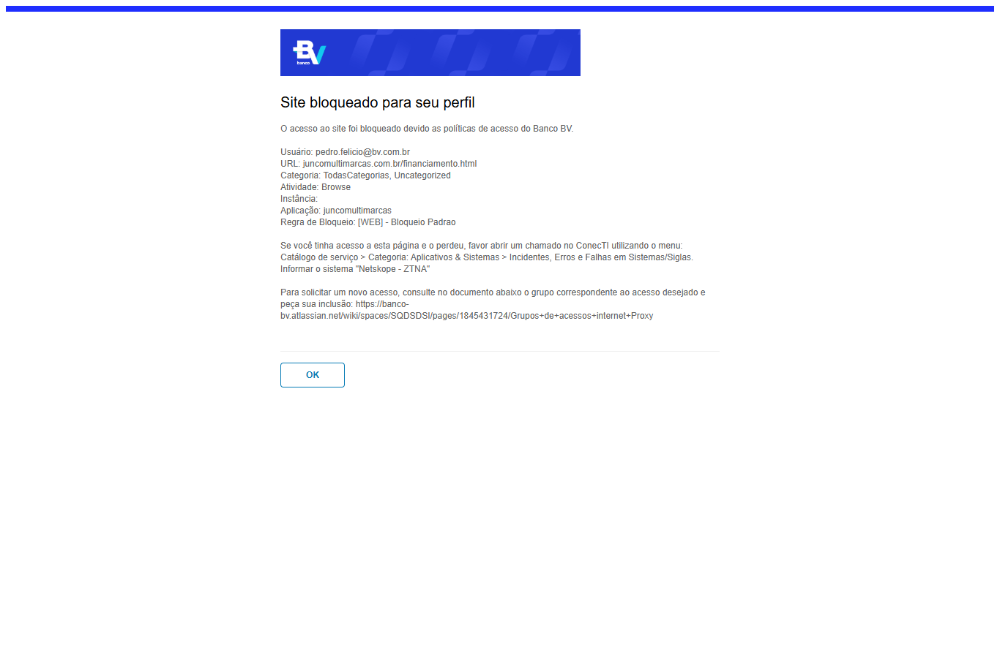

C7d10ba9118 — juncomultimarcas.com.br
https://juncomultimarcas.com.br/financiamento.html
Prioridade: MEDIUM · Cenário: B_AMBIGUOUS_COMMUNICATION · Revisão humana: PENDING
1. Decisão Consolidada
Justificativa
A coleta direta foi bloqueada pelo filtro corporativo (E-COLLECT), sendo a análise baseada nas evidências de descoberta (E-DISC-001). O site pertence a uma loja multimarcas de veículos (Junco Multimarcas, CNPJ 64.033.336/0001-33) que atua dentro do escopo de investigação de COBANs. Na página /financiamento.html, o estabelecimento destaca a marca BV Financeira como banco parceiro e disponibiliza formulário próprio e WhatsApp para captação de dados pessoais e análise de crédito, porém omite a declaração expressa e obrigatória de correspondente bancário exigida pela Resolução CMN nº 4.935/2021. Assim, enquadra-se em comunicação ambígua/ausência de transparência (B_AMBIGUOUS_COMMUNICATION / REVIEW_REQUIRED). [Revisor: CONFIRM] Nenhum questionamento determinístico; indícios mantidos.
Regras de consistência aplicadas
- acesso direto no navegador local bloqueado/indisponível; avaliação baseada nas evidências indexadas na descoberta (E-DISC-*)
Limitações
- conteúdo real do site não inspecionado (acesso bloqueado pela política de rede corporativa)
- apenas a URL descoberta foi inspecionada; páginas internas, formulários e fluxos após cliques não foram acessados
- acesso direto pelo navegador indisponível/bloqueado; identidade examinada apenas a partir das evidências indexadas na descoberta (E-DISC-*)
- nenhum cadastro autorizado de correspondentes carregado; CONFIRMED_COBAN indisponível nesta execução
- requisitos contratuais/internos não fornecidos: mapeamento limitado ao texto normativo
2. Screenshots


3. Catálogo de Evidências (Dados Brutos Observados)
| Ref | Tipo | Local | Conteúdo |
|---|---|---|---|
| E-URL | domain | url | URL final: https://juncomultimarcas.com.br/financiamento.html (domínio: juncomultimarcas.com.br) |
| E-COLLECT | network | collection | Status da coleta: BLOCKED; HTTP 403; ocorrências: HTTP 403: acesso bloqueado pelo filtro web corporativo da rede |
| E-DISC-001 | text | search_index | Índice de busca (grounding): juncomultimarcas.com.br — **Estabelecimento:** Junco Multimarcas (Vinhedo – SP) | **URL:** `https://juncomultimarcas.com.br` (página `/financiamento`) | **Uso da marca:** Destaca a marca **BV Financeira** na seção de bancos parceiros e no FAQ de financiamento de veículos seminovos, oferecendo um formulário próprio para captação de dados pessoais e solicitação de análise de crédito online ou via WhatsApp | **Conformidade (Razão Social, CNPJ e Condição de Correspondente):** Exibe no rodapé o nome fantasia e o CNPJ (`64.033.336/0001-33`), porém **omite** a declaração expressa e obrigatória de atuação na condição de correspondente bancário nos termos da Resolução CMN nº 4.935/2021 |
| E-SHOT-VIEWPORT | screenshot | viewport | evidence\C7d10ba9118\attempt-1\viewport.png (sha256 0634dc1ca65fb720…) |
| E-SHOT-FULL | screenshot | page | evidence\C7d10ba9118\attempt-1\fullpage.png (sha256 0634dc1ca65fb720…) |
4. Análise de Marca (gemini-4-argon, brand-analyst/v5)
Dimensões Avaliadas
| Dimensão | Sinal | Achado | Refs |
|---|---|---|---|
| VISUAL_IDENTITY | NOT_ASSESSED | Acesso visual à página real foi bloqueado pelo filtro web corporativo (HTTP 403). | E-COLLECT E-SHOT-VIEWPORT |
| DECLARED_COMMERCIAL_IDENTITY | LEGITIMATE | O estabelecimento identifica-se como Junco Multimarcas (Vinhedo - SP) em domínio próprio e exibe o CNPJ 64.033.336/0001-33 no rodapé. | E-URL E-DISC-001 |
| CORRESPONDENT_TRANSPARENCY | CONFUSION | Embora informe o CNPJ, a página omite a declaração expressa e obrigatória de atuação como correspondente bancário conforme exigido pela Resolução CMN nº 4.935/2021. | E-DISC-001 |
| INSTITUTIONAL_LANGUAGE | NEUTRAL | Refere-se à instituição como parte de 'bancos parceiros' e em FAQ de financiamento de seminovos, sem alegação de ser canal oficial do banco. | E-DISC-001 |
| LOGO_USAGE | NOT_ASSESSED | Há indicação de destaque à marca BV Financeira na seção de bancos parceiros, mas o bloqueio de rede impediu a verificação visual do uso de logotipo. | E-COLLECT E-DISC-001 |
| SERVICE_JOURNEY | CONFUSION | Disponibiliza formulário próprio para captação de dados pessoais e solicitação de análise de crédito online ou via WhatsApp sem o devido aviso de correspondente bancário. | E-DISC-001 |
| CONTACT_CHANNELS | NEUTRAL | Oferece contato via WhatsApp da loja sem indicação dos canais de atendimento/ouvidoria da instituição financeira contratante. | E-DISC-001 |
| CONSUMER_CONFUSION | CONFUSION | Captação de propostas de financiamento destacando a marca BV Financeira sem transparência regulamentar sobre a condição de correspondente bancário. | E-DISC-001 |
Indícios de Confusão
- [MEDIUM] CORRESPONDENT_TRANSPARENCY: A loja de veículos destaca a marca BV Financeira na página de financiamento e oferece captação de dados pessoais para análise de crédito, mas omite a declaração expressa e obrigatória de atuação na condição de correspondente bancário nos termos da Resolução CMN nº 4.935/2021. — E-DISC-001
- [MEDIUM] SERVICE_JOURNEY: Oferta de formulário próprio para captação de dados pessoais e solicitação de análise de crédito online ou via WhatsApp associada ao destaque da marca BV Financeira sem transparência de correspondente. — E-DISC-001
Indícios de Relação Legítima
- [HIGH] DECLARED_COMMERCIAL_IDENTITY: Uso de domínio próprio (juncomultimarcas.com.br) e exibição do nome fantasia (Junco Multimarcas) e CNPJ (64.033.336/0001-33) no rodapé. — E-URL E-DISC-001
Fatos Observados
- Acesso direto pelo navegador foi bloqueado pelo filtro web corporativo (HTTP 403) [E-COLLECT, E-SHOT-VIEWPORT].
- Trata-se da página de financiamento da revenda de veículos Junco Multimarcas (Vinhedo - SP), sob o domínio juncomultimarcas.com.br [E-URL, E-DISC-001].
- A página destaca a marca BV Financeira na seção de bancos parceiros e no FAQ de financiamento de veículos seminovos [E-DISC-001].
- Oferece formulário próprio para captação de dados pessoais e análise de crédito online ou via WhatsApp [E-DISC-001].
- Exibe no rodapé o CNPJ 64.033.336/0001-33, mas omite a declaração expressa de atuação na condição de correspondente bancário (Res. CMN nº 4.935/2021) [E-DISC-001].
Incertezas
- O acesso direto do navegador foi bloqueado (HTTP 403), impedindo a inspeção visual direta da página, de eventuais logotipos aplicados e dos campos exatos do formulário.
Síntese do Analista
A coleta direta foi bloqueada pelo filtro corporativo (E-COLLECT), sendo a análise baseada nas evidências de descoberta (E-DISC-001). O site pertence a uma loja multimarcas de veículos (Junco Multimarcas, CNPJ 64.033.336/0001-33) que atua dentro do escopo de investigação de COBANs. Na página /financiamento.html, o estabelecimento destaca a marca BV Financeira como banco parceiro e disponibiliza formulário próprio e WhatsApp para captação de dados pessoais e análise de crédito, porém omite a declaração expressa e obrigatória de correspondente bancário exigida pela Resolução CMN nº 4.935/2021. Assim, enquadra-se em comunicação ambígua/ausência de transparência (B_AMBIGUOUS_COMMUNICATION / REVIEW_REQUIRED).
5. Identidade do Responsável
cnpj:64033336000133
Há declaração de correspondente ou de parceria, sem identificação suficiente ou sem confirmação cadastral.
Fatos Observados
| Tipo | Valor | Ref | Contexto |
|---|---|---|---|
| domain | juncomultimarcas.com.br | E-URL | |
| cnpj | 64.033.336/0001-33 | E-DISC-001 | atsApp | **Conformidade (Razão Social, CNPJ e Condição de Correspondente):** Exibe no rodapé o nome fantasia e o CNPJ (`64.033.336/0001-33 |
| Índice de busca (grounding): juncomultimarcas.com.br — **Estabelecimento:** Junco Multimarcas (Vinhedo – SP) | **URL:** `https://juncomultimarcas.com.br` (página `/financiamento`) | **Uso da marca:** | E-DISC-001 | ||
| partnership_declaration | bancos parceiros | E-DISC-001 | **Uso da marca:** Destaca a marca **BV Financeira** na seção de bancos parceiros e no FAQ de financiamento de veículos seminovos, oferecendo um formulário próprio para captação de dados pessoais e sol |
Inferências de Associação (Não são Fatos)
- base da associação: cnpj publicado na página
6. Mapeamento de Conformidade (Hipóteses)
Mapeamento indicativo para apoio à auditoria. Não constitui conclusão regulatória; a decisão definitiva pertence à auditoria.
Res. CMN 4.935/2021, art. 14, inciso II — NO_INDICATION_OBSERVED
Fonte: NORMATIVE
Art. 14. O contrato de correspondente deve estabelecer: [...] II - vedação à utilização, pelo contratado, de logomarca ou de outros atributos que sejam similares aos adotados pela instituição contratante em suas agências, postos de atendimento, sítio eletrônico na internet, aplicativo ou outras plataformas de comunicação em rede;
Evidência observada: —
Res. CMN 4.935/2021, art. 14, inciso III, alíneas a e b — HYPOTHESIS_CONDITIONAL_ON_LINK
Fonte: NORMATIVE
Art. 14. O contrato de correspondente deve estabelecer: [...] III - divulgação ao público, pelo contratado, de sua condição de prestador de serviços à instituição contratante, identificada pelo nome com que é conhecida no mercado, com descrição dos produtos e serviços oferecidos e canais de contato da instituição contratante, inclusive de sua ouvidoria, em local visível, em destaque e em formato legível, por meio de: a) sítio eletrônico do correspondente na internet, acessível na página inicial; b) aplicativo e outras plataformas de comunicação em rede do correspondente; [...]
Hipótese: Divulgação ao público da condição de prestador de serviços à contratante ausente, insuficiente ou sem destaque. Aplicável somente se confirmado o vínculo de correspondente.
Evidência observada: E-DISC-001
Informação faltante:
- vínculo de correspondente não confirmado em cadastro autorizado (relação pública da contratante — art. 21 — ou base interna)
- canais de contato/ouvidoria da contratante não observados no material coletado (podem existir em páginas não inspecionadas)
- contrato de correspondente vigente e suas cláusulas
Res. CMN 4.935/2021, art. 3º — HYPOTHESIS_CONDITIONAL_ON_LINK
Fonte: NORMATIVE
Art. 3º O correspondente atua por conta e sob as diretrizes da instituição contratante, que assume inteira responsabilidade pelo atendimento prestado aos clientes e usuários por meio do contratado.
Hipótese: Atendimento ao público prestado por meio do contratado em condições que podem não seguir as diretrizes da contratante. Aplicável somente se confirmado o vínculo de correspondente.
Evidência observada: E-DISC-001
Informação faltante:
- vínculo de correspondente não confirmado em cadastro autorizado (relação pública da contratante — art. 21 — ou base interna)
- contrato de correspondente vigente e suas cláusulas
Controles da contratante relacionados
- Res. CMN 4.935/2021, art. 18, II e § 1º: Art. 18. [...] política de atuação e de contratação desses prestadores de serviços, prevendo, no mínimo: [...] II - mecanismos de controle de qualidade da atuação do correspondente [...]. § 1º Os mecanismos a que se refere o inciso II do caput devem conter medidas administrativas, contratualmente previstas, a serem adotadas pela instituição contratante em relação ao correspondente, aos substabelecidos e aos agentes certificados, se verificadas irregularidades ou inobservância dos padrões estabelecidos, incluindo a possibilidade de suspensão do atendimento prestado ao público e o encerramento antecipado do contrato nos casos considerados graves pela instituição contratante.
- Res. CMN 4.935/2021, art. 19, caput e § 1º: Art. 19. As instituições mencionadas no art. 1º devem adequar o sistema de controles internos com o objetivo de monitorar as atividades de atendimento ao público realizadas por intermédio de correspondentes, compatibilizando-os com o volume e a complexidade das operações realizadas. § 1º A auditoria interna da instituição contratante deve avaliar, anualmente, a efetividade dos mecanismos de controle de qualidade.
- Res. CMN 4.935/2021, art. 21: Art. 21. A instituição contratante deve manter atualizada a relação de seus contratados: I - na forma de dados abertos; e II - no seu sítio eletrônico na internet, acessível na página inicial e em local visível e formato legível.
Limitações: requisitos contratuais/internos não fornecidos: mapeamento limitado ao texto normativo
7. Revisão Crítica (heuristic-reviewer-v1)
Decisão: CONFIRM → REVIEW_REQUIRED / MEDIUM
Nenhum questionamento determinístico; indícios mantidos.
| Tema | Severidade | Questionamento | Refs |
|---|---|---|---|
| Nenhum questionamento | |||
8. Origem da Descoberta
| Fonte | Consulta / hipótese | URL original | Título / trecho |
|---|---|---|---|
| grounding | Objetivo: Páginas de financiamento de veículos de lojas e multimarcas com destaque para a marca.
Execute no Google Search as seguintes consultas (dorks):
- inurl:financiamento "Banco BV" veículos -site:bv.com.br -site:bancobv.com.br -site:bvfinanceira.com.br -site:bvinvestimentos.com.br -site:napista.com.br -site:bvopen.com.br -site:meufinanciamentosolar.com.br -site:votorantim.com.br -site:vam.com.br -site:reclameaqui.com.br -site:jusbrasil.com.br -site:jus.br -site:weebly.com -site:site123.me
- inurl:financiamento "bv financeira" (veículos OR seminovos OR multimarcas) -site:bv.com.br -site:bancobv.com.br -site:bvfinanceira.com.br -site:bvinvestimentos.com.br -site:napista.com.br -site:bvopen.com.br -site:meufinanciamentosolar.com.br -site:votorantim.com.br -site:vam.com.br -site:reclameaqui.com.br -site:jusbrasil.com.br -site:jus.br -site:weebly.com -site:site123.me
- intitle:financiamento ("bv financeira" OR "Banco BV") veículos -site:bv.com.br -site:bancobv.com.br -site:bvfinanceira.com.br -site:bvinvestimentos.com.br -site:napista.com.br -site:bvopen.com.br -site:meufinanciamentosolar.com.br -site:votorantim.com.br -site:vam.com.br -site:reclameaqui.com.br -site:jusbrasil.com.br -site:jus.br -site:weebly.com -site:site123.me
Liste de forma abrangente as páginas públicas encontradas (até 12 resultados distintos), informando para cada uma o nome do estabelecimento/perfil, a URL e como a marca é utilizada (destaque visual, título, feirão, simulador, redes sociais e se há ou não identificação clara de CNPJ e condição de correspondente bancário). H2-product:financiamento de veículos | https://juncomultimarcas.com.br/financiamento.html | juncomultimarcas.com.br **Estabelecimento:** Junco Multimarcas (Vinhedo – SP) | **URL:** `https://juncomultimarcas.com.br` (página `/financiamento`) | **Uso da marca:** Destaca a marca **BV Financeira** na seção de bancos parceiros e no FAQ de financiamento de veículos seminovos, oferecendo um formulário próprio para captação de dados pessoais e solicitação de análise de crédito online ou via WhatsApp | **Conformidade (Razão Social, CNPJ e Condição de Correspondente):** Exibe no rodapé o nome fantasia e o CNPJ (`64.033.336/0001-33`), porém **omite** a declaração expressa e obrigatória de atuação na condição de correspondente bancário nos termos da Resolução CMN nº 4.935/2021 |
9. Cadeia de Custódia da Coleta
sha256 97fde583930c8c9e5755743bab2d917e0ac0931409131bddb3b1c7636d41fe65
Original: https://juncomultimarcas.com.br/financiamento.html
Final: https://juncomultimarcas.com.br/financiamento.html
| Artefato | Caminho | SHA-256 | Bytes |
|---|---|---|---|
| screenshot_viewport | evidence\C7d10ba9118\attempt-1\viewport.png | 0634dc1ca65fb72026e561c3c8f29088c3ee90d94022341a04ed2b2e897e2762 | 47815 |
| screenshot_full | evidence\C7d10ba9118\attempt-1\fullpage.png | 0634dc1ca65fb72026e561c3c8f29088c3ee90d94022341a04ed2b2e897e2762 | 47815 |
| html | evidence\C7d10ba9118\attempt-1\page.html.txt | fb2ff52843c74d0309132deb4d73beb6528e5c4eb4e741925b5419d10458f645 | 65532 |
| text | evidence\C7d10ba9118\attempt-1\text.txt | 937db8078e007321bb5874961141ec845e98d44584a0b1dfe4f9bcf1e6d09e0c | 812 |
| page_data | evidence\C7d10ba9118\attempt-1\page.json | bb1d72c7a41dd3c7cb7b0bd5a22e4597f054cf811b8b6765f877591657ba204b | 2788 |
Ocorrências e conteúdo não inspecionado
- HTTP 403: acesso bloqueado pelo filtro web corporativo da rede
- conteúdo real do site não inspecionado (acesso bloqueado pela política de rede corporativa)
- apenas a URL descoberta foi inspecionada; páginas internas, formulários e fluxos após cliques não foram acessados
10. Histórico de Estados
| Quando | De | Para | Nota |
|---|---|---|---|
| 2026-11-23T14:17:58+00:00 | DISCOVERED | QUEUED | prioritised (score 1.0) |
| 2026-11-23T14:49:09+00:00 | QUEUED | COLLECTING | |
| 2026-11-23T14:49:14+00:00 | COLLECTING | COLLECTED | |
| 2026-11-23T14:49:14+00:00 | COLLECTED | ANALYZING | |
| 2026-11-23T14:49:38+00:00 | ANALYZING | REVIEWING | |
| 2026-11-23T14:49:38+00:00 | REVIEWING | COMPLETED |